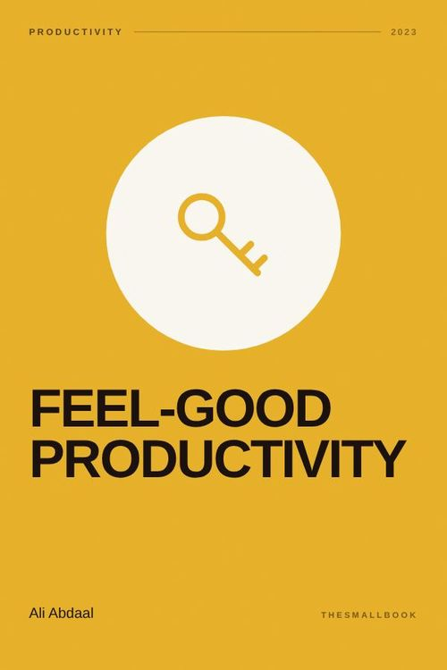

Library › Authors › Ali Abdaal
Books by Ali Abdaal
Ali Abdaal has one book in the library. Every book here is read down to the big idea, the lessons, the lines worth keeping and the actions worth taking. Start with the summary, then buy the full book if it earns a place on your shelf.

Feel-Good Productivity
2023 · 11 min · 9 lessons
Stop forcing yourself through tasks with willpower. Make work feel good through play, power and people, and productivity follows naturally.
Most productivity advice assumes you need more discipline. Ali Abdaal, a doctor turned YouTuber, argues the opposite: feeling good is the engine of productivity, not the reward for it. Positive emotions broaden our thinking and energise us, while stress and dread shrink our focus. The book is organised in three parts. First, energise: bring play, power and people into your work. Second, unblock: deal with uncertainty, fear and inertia, the real reasons we procrastinate. Third, sustain: avoid burnout by aligning...
Lessons in the summary
- Feeling Good Fuels Doing Well
- Play: Approach Work With Curiosity
- Power: Build Confidence Through Small Wins
- People: Work Is Better Together
- Clarity: Remove Uncertainty
- Courage: Fear Shrinks When You Name It
- Starting: Lower the Barrier to Begin
- Energy Management: Avoid Overexertion
- Recharge and Align
Lines worth keeping
- Feeling good is not the result of productivity. It is the cause of it.
- The secret to productivity is not discipline. It is enjoyment.
- When we feel good, we do more.
Questions Ali Abdaal helps answer
Read nearby authors next
- Robin Sharma 5 books
- Cal Newport 4 books
- Daniel H. Pink 3 books
- Nir Eyal 3 books
- Atul Gawande 2 books
- Brian Tracy 2 books
- Johann Hari 2 books
- Josh Kaufman 2 books
Questions Ali Abdaal helps answer
Where should I start with Ali Abdaal? Start with Feel-Good Productivity: Stop forcing yourself through tasks with willpower. Make work feel good through play, power and people, and productivity follows naturally.